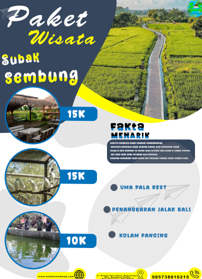
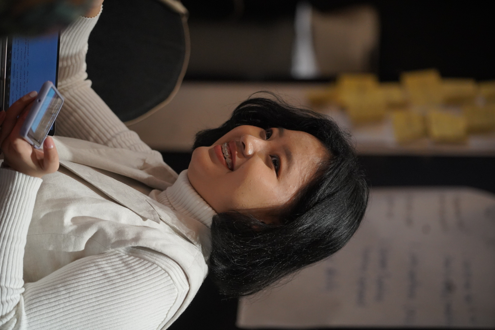
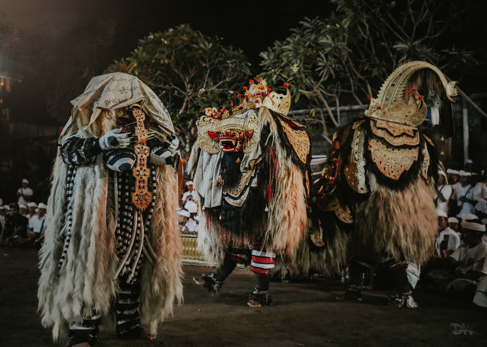

Tentang Saya
Saya Justin Sebagai seorang fotografer dan desainer, dengan menggabungkan seni menangkap momen dan keahlian merancang elemen visual. Dalam fotografi, saya berusaha menghadirkan cerita dan emosi melalui komposisi, pencahayaan, dan perspektif. Sedangkan Sebagai desainer, saya fokus menciptakan desain yang estetis dan fungsional, memadukan warna, tipografi, dan elemen kreatif lainnya untuk menyampaikan pesan yang kuat.
Portofolio Proyek
Proyek 1
Proyek Pertama ini adalah desain saya saat duduk di bangku SMK, dan desain Photoshop ini menciptakan visual menarik untuk paket liburan, menonjolkan destinasi wisata dan penawaran dengan elemen desain yang menggugah minat.
Proyek 2
Proyek Kedua ini adalah hasil gambar yang saya ambil saat saya masih PKL, dan fotografi ini menangkap keindahan senyum wanita dalam momen alami, menyampaikan emosi kebahagiaan dan kehangatan yang universal.
Proyek 3
Proyek Ketiga dan terakhir ini saya dapatkan saya sedang mendokumentasikan acara umat hindu, dan fotografi ini menyoroti keindahan dan kekuatan mistis Barong Bali, menggambarkan detail artistik dan spiritualitas yang mendalam dari simbol pelindung budaya ini.
